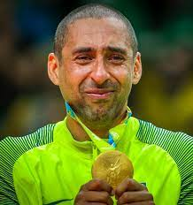

| Nome |
Sérgio Dutra Santos |
Data de
nascimento |
15/10/1975 |
| Altura |
1,84 metros |
Sérgio Dutra Santos, mais conhecido como Serginho ou Escadinha (Diamante do Norte, 15 de outubro de 1975), é um ex-jogador de vôlei brasileiro, que atuou como líbero.
É tido como o melhor líbero da história do vôlei, com suas defesas difíceis e passes precisos, fazendo diferença em suas atuações. Em 2009 foi eleito o MVP da Liga Mundial daquele ano, tornando-se o único líbero da história a ter conquistado essa posição. É o único jogador da história a disputar quatro finais olímpicas consecutivas entre 2004 e 2016.
| Principais títulos |
- Campeão mundial em 2002 e 2006
- Campeão da Copa do Mundo em 2003
- Campeão da Liga Mundial em 2001, 2003 (Melhor Defesa e Melhor Recepção), 2004, 2005, 2006 e 2007 (Melhor Líbero), 2009 (Melhor Jogador)
- Medalha de Ouro nos Jogos Pan-Americanos de 2007
- Vice-Campeão da Liga Mundial em 2002 (Melhor Defesa)
- Medalha de Ouro nos Jogos Pan-Americanos de 2011
- Medalha de Ouro nos Jogos Olímpicos de Verão de 2004
- Medalha de Prata nos Jogos Olímpicos de Verão de 2008
- Medalha de Prata nos Jogos Olímpicos de Verão de 2012
- Medalha de Ouro nos Jogos Olímpicos de Verão de 2016
- Campeão da Taça Ouro de Voleibol Masculino de 2017
|
| Saiba mais |
| Ano |
Clube |
| 1992–1997 |
Palmeiras |
| 1997–1999 |
CRET São Caetano |
| 1999–2000 |
EC União Suzano |
| 2000–2004 |
EC Banespa |
| 2004–2008 |
Copra Berni Piacenza |
| 2008–2010 |
BVC São Bernardo |
| 2010–2017 |
SESI São Paulo |
| 2017–2019 |
Corinthians/Guarulhos |
| 2019–2020 |
Ribeirão Preto Vôlei |